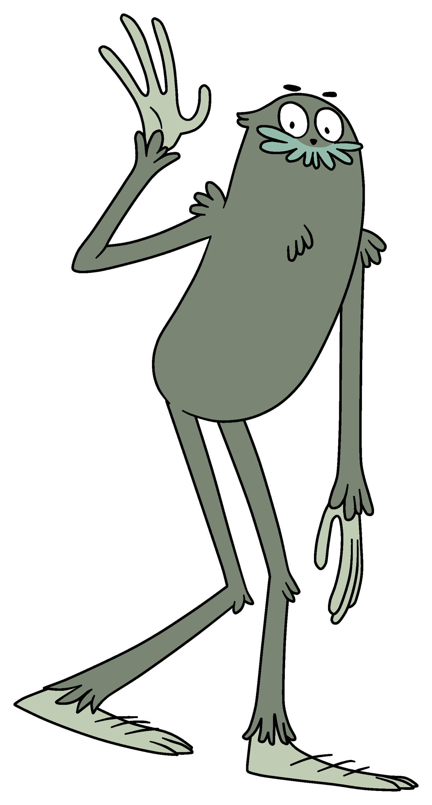
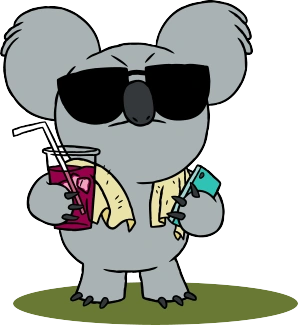

Otros Personajes

Chloe Park

Charlie

Nom Nom
Estos tres personajes desempeñan roles distintivos que enriquecen la trama de "Escandalosos" con sus personalidades vibrantes y sus interacciones diversas con los osos protagonistas. Chloe Park, con su mente aguda y su pasión por la ciencia, a menudo introduce a los osos en emocionantes aventuras llenas de descubrimientos y experimentos. Su curiosidad sin límites y su ingenio la convierten en una figura inspiradora para los osos y para los espectadores, demostrando que la inteligencia y la determinación pueden superar cualquier obstáculo.
Informacion Personajes